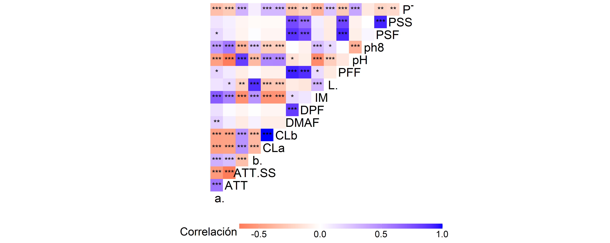
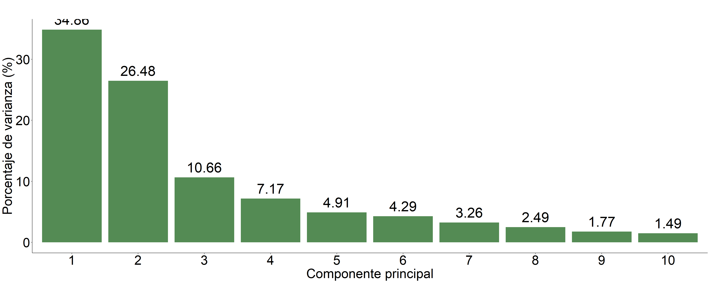
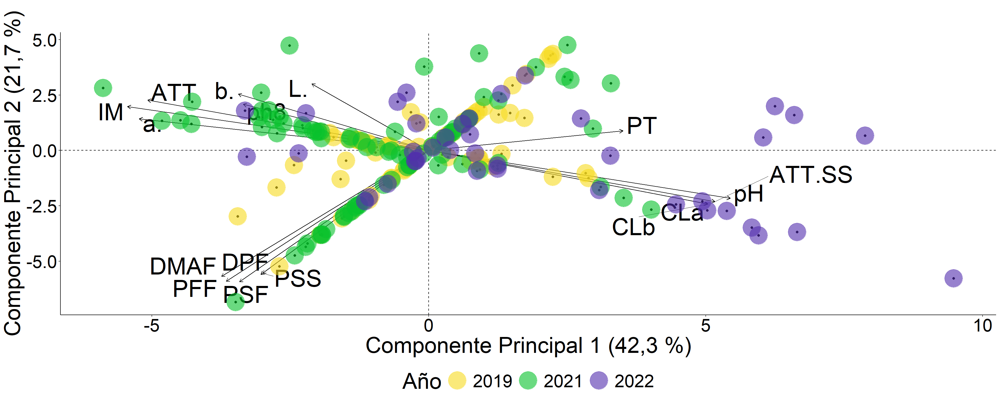
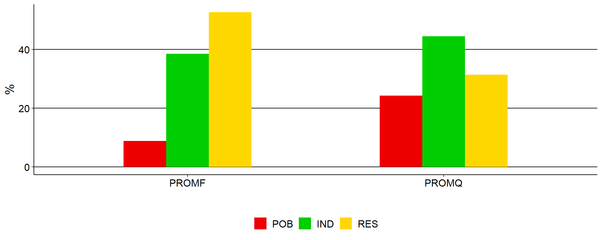

Análisis multivariado
## Importance of components:
## PC1 PC2 PC3 PC4 PC5 PC6 PC7 PC8 PC9
## Standard deviation 2.48035 2.11852 1.76369 1.28721 1.15847 1.07607 1.02803 0.93279 0.847164
## Proportion of Variance 0.25634 0.18700 0.12961 0.06904 0.05592 0.04825 0.04404 0.03625 0.029900
## Cumulative Proportion 0.25634 0.44334 0.57295 0.64199 0.69791 0.74616 0.79019 0.82645 0.856350
## PC10 PC11 PC12 PC13 PC14 PC15 PC16 PC17
## Standard deviation 0.788019 0.732835 0.710712 0.624238 0.595094 0.506973 0.479586 0.423756
## Proportion of Variance 0.025870 0.022380 0.021050 0.016240 0.014760 0.010710 0.009580 0.007480
## Cumulative Proportion 0.882220 0.904600 0.925650 0.941880 0.956640 0.967350 0.976930 0.984410
## PC18 PC19 PC20 PC21 PC22 PC23 PC24
## Standard deviation 0.364222 0.278207 0.244076 0.211508 0.175787 0.169729 0.0030427
## Proportion of Variance 0.005530 0.003220 0.002480 0.001860 0.001290 0.001200 0.0000000
## Cumulative Proportion 0.989940 0.993170 0.995650 0.997510 0.998800 1.000000 1.0000000## IM pH a* CLb CLa ATT/SS ATT
## 9.4253456019 8.4445577981 8.2402657476 7.8477631664 7.8314408122 7.7755815293 7.2854923115
## PT DMAF PFF PSF DPPH25 DPF PSS
## 4.9917028479 4.9349270525 4.7070828825 3.8319787194 3.5742302501 3.2124018210 3.0506102598
## PEN DPPH50 ph8 b* CTC DPPH100 SS
## 2.9353928157 2.6462172182 2.6192653422 2.4803338883 1.3247889774 1.2691608127 0.7595498471
## L* NS DPPH250
## 0.6669073441 0.0735958550 0.0714070992## PFF PSF DMAF DPF PSS L* b*
## 13.234767365 13.101578002 12.487186508 11.826466638 11.620920951 4.655986701 3.642835817
## ATT CLa CLb ATT/SS ph8 pH NS
## 3.315018337 3.238423044 3.238246955 2.797941112 2.651564687 2.572611502 2.164731597
## IM SS a* PEN DPPH250 DPPH100 PT
## 2.131165413 1.849186302 1.488723082 1.479254232 0.734490622 0.607567267 0.507408226
## DPPH50 CTC DPPH25
## 0.321523203 0.167262584 0.165139854## DPPH50 DPPH100 DPPH25 b* L* PT
## 20.37113371732 19.31014482280 17.98246695493 6.10892319105 5.47652432757 4.93792960032
## SS DPPH250 CTC PSF ph8 DMAF
## 4.54937235795 3.65110936258 3.43475507165 2.80316047601 2.26586517181 2.01001281873
## PSS PFF DPF ATT PEN a*
## 1.94084200466 1.87160539667 1.29929996247 0.66833765112 0.37369811724 0.29524865028
## NS CLb CLa IM pH ATT/SS
## 0.26428635264 0.11058443528 0.11040432470 0.08346413045 0.07960095690 0.00123014486Contribución acumulada de cada variable en CP1 y CP2
## PFF DMAF PSF DPF PSS IM CLb
## 17.941850247 17.422113560 16.933556721 15.038868459 14.671531211 11.556511015 11.086010121
## CLa pH ATT ATT/SS a* b* PT
## 11.069863856 11.017169300 10.600510649 10.573522641 9.728988829 6.123169705 5.499111074
## L* ph8 PEN DPPH25 DPPH50 SS NS
## 5.322894045 5.270830030 4.414647048 3.739370104 2.967740421 2.608736149 2.238327452
## DPPH100 CTC DPPH250
## 1.876728080 1.492051561 0.805897721Supresión de variables
## Error in names(data_numeric) <- c("PFF", "DMAF", "L*", "DPF", "PSF", "b*", : 'names' attribute [17] must be the same length as the vector [16]Resultados PCA
Resumen
## Importance of components:
## PC1 PC2 PC3 PC4 PC5 PC6 PC7 PC8 PC9
## Standard deviation 2.36155 2.05850 1.30585 1.07127 0.886619 0.828938 0.722299 0.631811 0.532859
## Proportion of Variance 0.34856 0.26484 0.10658 0.07173 0.049130 0.042950 0.032610 0.024950 0.017750
## Cumulative Proportion 0.34856 0.61339 0.71997 0.79170 0.840830 0.883770 0.916380 0.941330 0.959080
## PC10 PC11 PC12 PC13 PC14 PC15 PC16
## Standard deviation 0.488228 0.398478 0.340971 0.252592 0.213196 0.179141 0.00314651
## Proportion of Variance 0.014900 0.009920 0.007270 0.003990 0.002840 0.002010 0.00000000
## Cumulative Proportion 0.973970 0.983900 0.991170 0.995150 0.997990 1.000000 1.00000000Contribuciones de las variables a cada componente principal
## pH IM a. ATT.SS ATT CLb CLa DMAF
## 10.33886810 10.31481618 9.52904306 9.30340144 8.98359107 8.85440281 8.83456036 4.88677872
## PFF PT b. PSF ph8 DPF PSS L.
## 4.66508191 4.28261375 4.12531709 4.07088719 3.91310733 3.20646537 3.13636971 1.55469592## PSF PFF DMAF DPF PSS L. b.
## 16.160730924 16.002492505 14.834442951 14.380557236 14.120206333 4.118801566 2.952450469
## CLb CLa ATT.SS ATT pH ph8 IM
## 2.691348937 2.691336189 2.439172592 2.375034451 2.145934942 1.989452809 1.804150329
## a. PT
## 0.932069408 0.361818360Contribución acumulada de cada variable en CP1 y CP2
## PFF PSF DMAF DPF PSS pH IM ATT.SS
## 20.66757441 20.23161811 19.72122167 17.58702261 17.25657605 12.48480304 12.11896651 11.74257403
## CLb CLa ATT a. b. ph8 L. PT
## 11.54575175 11.52589655 11.35862552 10.46111247 7.07776756 5.90256014 5.67349748 4.64443211Heatmap 
Proporción de contribución de cada variable a PC1, PC2 y PC3

Scree plot para ver la varianza explicada por cada Principal component 
## Error in eval(expr, envir, enclos): objeto 'coords' no encontrado## Error in eval(expr, envir, enclos): objeto 'biplot_variables_multivar' no encontrado
Análisis univariado

QUIM chemical variables
FIS physical variables
PFF Peso fresco del fruto
DE Diámetro ecuatorial
DP Diámetro polar
PEN Resistencia a la penetración
PSF Peso seco del fruto
PSS Peso seco semilla
IM Índice de madurez
AAO Actividad Anti Oxidante
CAR Carotenoides
CLOA Clorofila a
CLOB Clorofila b
PHE Fenoles totales
TSS Solidos solubles totales
TTA Acidez Total Titulable
POB population
IND phenotype
RES residual